Chapter 7: Cellular Respiration¶
Introduction¶
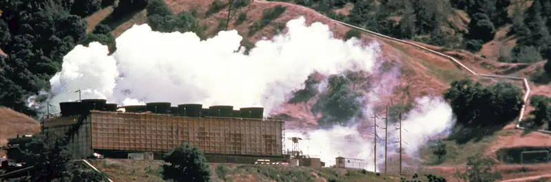
The electrical energy plant in Figure 7.1 converts energy from one form to another form that can be more easily used. This type of generating plant starts with underground thermal energy (heat) and transforms it into electrical energy that will be transported to homes and factories. Like a generating plant, plants and animals also must take in energy from the environment and convert it into a form that their cells can use. Mass and its stored energy enter an organism’s body in one form and are converted into another form that can fuel the organism’s life functions. In the process of photosynthesis, plants and other photosynthetic producers take in energy in the form of light (solar energy) and convert it into chemical energy in the form of glucose, which stores this energy in its chemical bonds. Then, a series of metabolic pathways, collectively called cellular respiration, extracts the energy from the bonds in glucose and converts it into a form that all living things can use.
7.1 Energy in Living Systems¶
Learning Objectives
By the end of this section, you will be able to do the following:
- Discuss the importance of electrons in the transfer of energy in living systems
- Explain how ATP is used by cells as an energy source
Energy conversion within a cell involves many coordinated chemical pathways. Most of these pathways are combinations of oxidation and reduction reactions, which occur at the same time. An oxidation reaction strips an electron from an atom in a compound, and the addition of this electron to another compound is a reduction reaction. Because oxidation and reduction usually occur together, these pairs of reactions are called oxidation reduction reactions, or redox reactions.
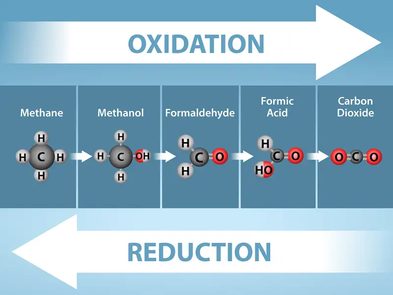
Electrons and Energy¶
The removal of an electron from a molecule (oxidizing it), results in a decrease in potential energy in the oxidized compound. However, the electron (sometimes as part of a hydrogen atom) does not remain unbonded in the cytoplasm of a cell. Rather, the electron is shifted to a second compound, reducing the second compound. The shift of an electron from one compound to another removes some potential energy from the first compound (the oxidized compound) and increases the potential energy of the second compound (the reduced compound). The transfer of electrons between molecules is important because most of the energy stored in atoms and used to fuel cell functions is in the form of high-energy electrons. The transfer of energy in the form of high-energy electrons allows the cell to transfer and use energy in an incremental fashion—in small packages rather than in a single, destructive burst. This chapter focuses on the extraction of energy from food; you will see that as you track the path of the transfers, you are tracking the path of electrons moving through metabolic pathways.
Electron Carriers¶
In living systems, a small class of compounds functions as electron shuttles: they bind and carry high-energy electrons between compounds in biochemical pathways. The principal electron carriers we will consider are derived from the B vitamin group and are derivatives of nucleotides. These compounds can be easily reduced (that is, they accept electrons) or oxidized (they lose electrons). Nicotinamide adenine dinucleotide (NAD) (Figure 7.3) is derived from vitamin B3, niacin. NAD+ is the oxidized form of the molecule; NADH is the reduced form of the molecule after it has accepted two electrons and a proton (which together are the equivalent of a hydrogen atom with an extra electron). Note that if a compound has an “H” on it, it is generally reduced (e.g., NADH is the reduced form of NAD).
NAD+ can accept electrons from an organic molecule according to the general equation:
When electrons are added to a compound, it is reduced. A compound that reduces another is called a reducing agent. In the above equation, RH is a reducing agent, and NAD+ is reduced to NADH. When electrons are removed from a compound, it is oxidized. A compound that oxidizes another is called an oxidizing agent. In the above equation, NAD+ is an oxidizing agent, and RH is oxidized to R.
Similarly, flavin adenine dinucleotide (FAD) is derived from vitamin B2, also called riboflavin. Its reduced form is FADH2. A second variation of NAD, NADP, contains an extra phosphate group. Both NAD+ and FAD are extensively used in energy extraction from sugars, and NADP plays an important role in anabolic reactions and photosynthesis in plants.
![This illustration shows the molecular structure of N A D superscript plus sign baseline and N A D H. Both compounds are composed of an adenine nucleotide and a nicotinamide nucleotide, which bond together to form a dinucleotide. The nicotinamide nucleotide is at the 5 prime end, and the adenine nucleotide is at the 3 prime end. Nicotinamide is a nitrogenous base, meaning it has nitrogen in a six-membered carbon ring. In N A D H, one extra hydrogen is associated with this ring, which is not found in N A D superscript plus sign baseline.](img/figure-07-01-01ab.webp)
ATP in Living Systems¶
A living cell cannot store significant amounts of free energy. Excess free energy would result in an increase of heat in the cell, which would result in excessive thermal motion that could damage and then destroy the cell. Rather, a cell must be able to handle that energy in a way that enables the cell to store energy safely and release it for use only as needed. Living cells accomplish this by using the compound adenosine triphosphate (ATP). ATP is often called the “energy currency” of the cell, and, like currency, this versatile compound can be used to fill any energy need of the cell. How? It functions similarly to a rechargeable battery.
When ATP is broken down, usually by the removal of its terminal phosphate group, energy is released. The energy is used to do work by the cell, usually when the released phosphate binds to another molecule, thereby activating it. For example, in the mechanical work of muscle contraction, ATP supplies the energy to move the contractile muscle proteins. Recall the active transport work of the sodium-potassium pump in cell membranes. ATP alters the structure of the integral protein that functions as the pump, changing its affinity for sodium and potassium. In this way, the cell performs work, pumping ions against their electrochemical gradients.
ATP Structure and Function¶
At the heart of ATP is a molecule of adenosine monophosphate (AMP), which is composed of an adenine molecule bonded to a ribose molecule and to a single phosphate group (Figure 7.4). Ribose is a five-carbon sugar found in RNA, and AMP is one of the nucleotides in RNA. The addition of a second phosphate group to this core molecule results in the formation of adenosine diphosphate (ADP); the addition of a third phosphate group forms adenosine triphosphate (ATP).
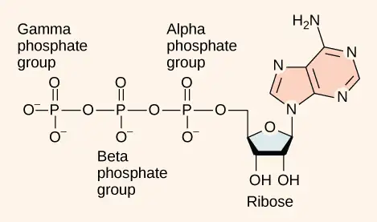
The addition of a phosphate group to a molecule requires energy. Phosphate groups are negatively charged and thus repel one another when they are arranged in series, as they are in ADP and ATP. This repulsion makes the ADP and ATP molecules inherently unstable. The release of one or two phosphate groups from ATP, a process called dephosphorylation, releases energy.
Energy from ATP¶
Hydrolysis is the process of breaking complex macromolecules apart. During hydrolysis, water is split, or lysed, and the resulting hydrogen atom (H+) and a hydroxyl group (OH-), or hydroxide, are added to the larger molecule. The hydrolysis of ATP produces ADP, together with an inorganic phosphate ion (Pi), and the release of free energy. To carry out life processes, ATP is continuously broken down into ADP, and like a rechargeable battery, ADP is continuously regenerated into ATP by the reattachment of a third phosphate group. Water, which was broken down into its hydrogen atom and hydroxyl group (hydroxide) during ATP hydrolysis, is regenerated when a third phosphate is added to the ADP molecule, reforming ATP.
Obviously, energy must be infused into the system to regenerate ATP. Where does this energy come from? In nearly every living thing on Earth, the energy comes from the metabolism of glucose, fructose, or galactose, all isomers with the chemical formula C6H12O6 but different molecular configurations. In this way, ATP is a direct link between the limited set of exergonic pathways of glucose catabolism and the multitude of endergonic pathways that power living cells.
Phosphorylation¶
Recall that, in some chemical reactions, enzymes may bind to several substrates that react with each other on the enzyme, forming an intermediate complex. An intermediate complex is a temporary structure, and it allows one of the substrates (such as ATP) and reactants to more readily react with each other; in reactions involving ATP, ATP is one of the substrates and ADP is a product. During an endergonic chemical reaction, ATP forms an intermediate complex with the substrate and enzyme in the reaction. This intermediate complex allows the ATP to transfer its third phosphate group, with its energy, to the substrate, a process called phosphorylation. Phosphorylation refers to the addition of the phosphate (~P). This is illustrated by the following generic reaction, in which A and B represent two different substrates:
When the intermediate complex breaks apart, the energy is used to modify the substrate and convert it into a product of the reaction. The ADP molecule and a free phosphate ion are released into the medium and are available for recycling through cell metabolism.
Substrate Phosphorylation¶
ATP is generated through two mechanisms during the breakdown of glucose. A few ATP molecules are generated (that is, regenerated from ADP) as a direct result of the chemical reactions that occur in the catabolic pathways. A phosphate group is removed from an intermediate reactant in the pathway, and the free energy of the reaction is used to add the third phosphate to an available ADP molecule, producing ATP (Figure 7.5). This very direct method of phosphorylation is called substrate-level phosphorylation.
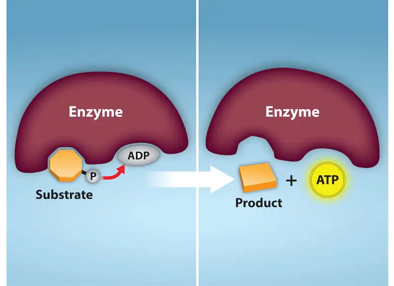
Oxidative Phosphorylation¶
Most of the ATP generated during glucose catabolism, however, is derived from a much more complex process, chemiosmosis, which takes place in mitochondria (Figure 7.6) within a eukaryotic cell or the plasma membrane of a prokaryotic cell. Chemiosmosis, a process of ATP production in cellular metabolism, is used to generate 90 percent of the ATP made during glucose catabolism and is also the method used in the light reactions of photosynthesis to harness the energy of sunlight. The production of ATP using the process of chemiosmosis is called oxidative phosphorylation because of the involvement of oxygen in the process.
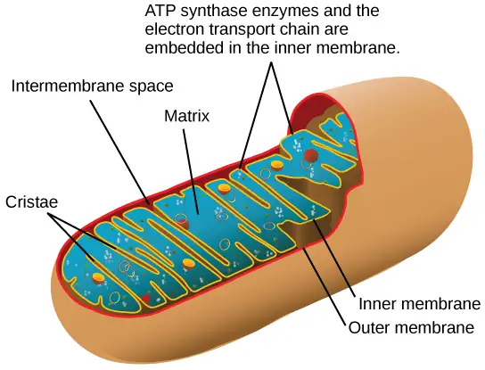
Career Connection: Mitochondrial Disease Physician
What happens when the critical reactions of cellular respiration do not proceed correctly? This may happen in mitochondrial diseases, which are genetic disorders of metabolism. Mitochondrial disorders can arise from mutations in nuclear or mitochondrial DNA, and they result in the production of less energy than is normal in body cells. In type 2 diabetes, for instance, the oxidation efficiency of NADH is reduced, impacting oxidative phosphorylation but not the other steps of respiration. Symptoms of mitochondrial diseases can include muscle weakness, lack of coordination, stroke-like episodes, and loss of vision and hearing. Most affected people are diagnosed in childhood, although there are some adult-onset diseases. Identifying and treating mitochondrial disorders is a specialized medical field. The educational preparation for this profession requires a college education, followed by medical school with a specialization in medical genetics. Medical geneticists can be board certified by the American Board of Medical Genetics and go on to become associated with professional organizations devoted to the study of mitochondrial diseases, such as the Mitochondrial Medicine Society and the Society for Inherited Metabolic Disorders.
7.2 Glycolysis¶
Learning Objectives
By the end of this section, you will be able to do the following:
- Describe the overall result in terms of molecules produced during the chemical breakdown of glucose by glycolysis
- Compare the output of glycolysis in terms of ATP molecules and NADH molecules produced
As you have read, nearly all of the energy used by living cells comes to them in the bonds of the sugar glucose. Glycolysis is the first step in the breakdown of glucose to extract energy for cellular metabolism. In fact, nearly all living organisms carry out glycolysis as part of their metabolism. The process does not use oxygen directly and therefore is termed anaerobic. Glycolysis takes place in the cytoplasm of both prokaryotic and eukaryotic cells. Glucose enters heterotrophic cells in two ways. One method is through secondary active transport in which the transport takes place against the glucose concentration gradient. The other mechanism uses a group of integral proteins called GLUT proteins, also known as glucose transporter proteins. These transporters assist in the facilitated diffusion of glucose.
Glycolysis begins with the six-carbon ring-shaped structure of a single glucose molecule and ends with two molecules of a three-carbon keto acid called pyruvate. Glycolysis consists of two distinct phases. The first part of the glycolysis pathway traps the glucose molecule in the cell and uses energy to modify it so that the six-carbon sugar molecule can be split evenly into the two three-carbon molecules. The second part of glycolysis extracts energy from the molecules and stores it in the form of ATP and NADH—remember: this is the reduced form of NAD.
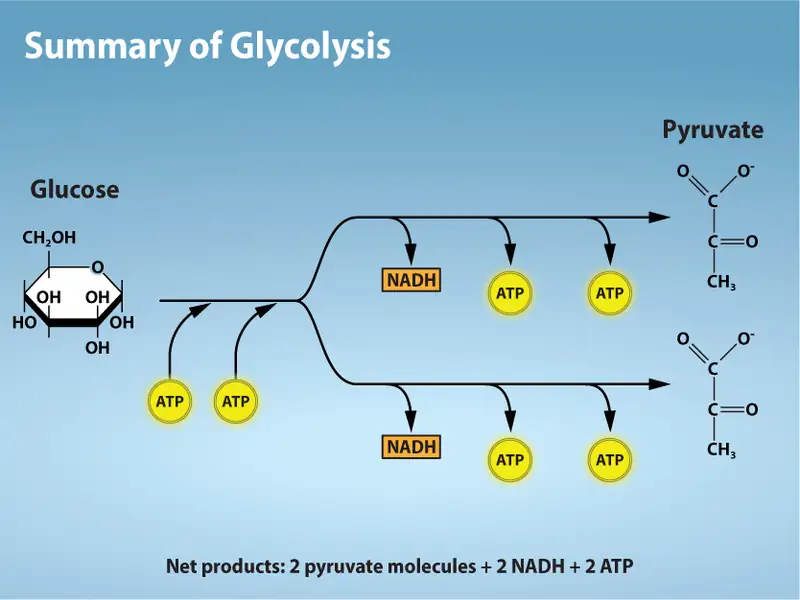
First Half of Glycolysis (Energy-Requiring Steps)¶
Step 1. The first step in glycolysis (Figure 7.8) is catalyzed by hexokinase, an enzyme with broad specificity that catalyzes the phosphorylation of six-carbon sugars. Hexokinase phosphorylates glucose using ATP as the source of the phosphate, producing glucose-6-phosphate, a more reactive form of glucose. This reaction prevents the phosphorylated glucose molecule from continuing to interact with the GLUT proteins, and it can no longer leave the cell because the negatively charged phosphate will not allow it to cross the hydrophobic interior of the plasma membrane.
Step 2. In the second step of glycolysis, an isomerase converts glucose-6-phosphate into one of its isomers, fructose-6-phosphate (this isomer has a phosphate attached at the location of the sixth carbon of the ring). An isomerase is an enzyme that catalyzes the conversion of a molecule into one of its isomers. (This change from phosphoglucose to phosphofructose allows the eventual split of the sugar into two three-carbon molecules.)
Step 3. The third step is the phosphorylation of fructose-6-phosphate, catalyzed by the enzyme phosphofructokinase. A second ATP molecule donates a high-energy phosphate to fructose-6-phosphate, producing fructose-1,6-bisphosphate. In this pathway, phosphofructokinase is a rate-limiting enzyme. It is active when the concentration of ADP is high; it is less active when ADP levels are low and the concentration of ATP is high. Thus, if there is “sufficient” ATP in the system, the pathway slows down. This is a type of end product inhibition, since ATP is the end product of glucose catabolism.
Step 4. The newly added high-energy phosphates further destabilize fructose-1,6-bisphosphate. The fourth step in glycolysis employs an enzyme, aldolase, to cleave fructose-1,6-bisphosphate into two three-carbon isomers: dihydroxyacetone phosphate and glyceraldehyde-3-phosphate.
Step 5. In the fifth step, an isomerase transforms the dihydroxyacetone-phosphate into its isomer, glyceraldehyde-3-phosphate. Thus, the pathway will continue with two molecules of a glyceraldehyde-3-phosphate. At this point in the pathway, there is a net investment of energy from two ATP molecules in the breakdown of one glucose molecule.
![This illustration shows the steps in the first half of glycolysis. In step one, the enzyme hexokinase uses one A T P molecule in the phosphorylation of glucose. In step two, glucose dash 6 dash phosphate is rearranged to form fructose dash 6 dash phosphate by phosphoglucose isomerase. In step three, phosphofructokinase uses a second A T P molecule in the phosphorylation of the substrate, forming fructose dash 1, 6 dash bisphosphate. In step four, the enzyme fructose bisphosphate aldolase splits the substrate into two, forming glyceraldeyde dash 3 dash phosphate and dihydroxyacetone-phosphate. In step five, triose phosphate isomerase converts the dihydroxyacetone-phosphate into glyceraldehyde dash 3 dash phosphate.](img/figure-07-02-01-0ee2.webp)
Second Half of Glycolysis (Energy-Releasing Steps)¶
So far, glycolysis has cost the cell two ATP molecules and produced two small, three-carbon sugar molecules. Both of these molecules will proceed through the second half of the pathway, and sufficient energy will be extracted to pay back the two ATP molecules used as an initial investment and produce a profit for the cell of two additional ATP molecules and two even higher-energy NADH molecules.
Step 6. The sixth step in glycolysis (Figure 7.9) oxidizes the sugar (glyceraldehyde-3-phosphate), extracting high-energy electrons, which are picked up by the electron carrier NAD+, producing NADH. The sugar is then phosphorylated by the addition of a second phosphate group, producing 1,3-bisphosphoglycerate. Note that the second phosphate group does not require another ATP molecule.
![This illustration shows the steps in the second half of glycolysis. In step six, the enzyme glyceraldehyde dash 3 dash phosphate dehydrogenase produces one N A D H molecule and forms 1, 3 dash bisphosphoglycerate. In step seven, the enzyme phosphoglycerate kinase removes a phosphate group from the substrate, forming one A T P molecule and 3 dash phosphoglycerate. In step eight, the enzyme phosphoglycerate mutase rearranges the substrate to form 2 dash phosphoglycerate. In step nine, the enzyme enolase rearranges the substrate to form phosphoenolpyruvate. In step ten, a phosphate group is removed from the substrate, forming one A T P molecule and pyruvate.](img/figure-07-02-02.webp)
Here again is a potential limiting factor for this pathway. The continuation of the reaction depends upon the availability of the oxidized form of the electron carrier, NAD+. Thus, NADH must be continuously oxidized back into NAD+ in order to keep this step going. If NAD+ is not available, the second half of glycolysis slows down or stops. If oxygen is available in the system, the NADH will be oxidized readily, though indirectly, and the high-energy electrons from the hydrogen released in this process will be used to produce ATP. In an environment without oxygen, an alternate pathway (fermentation) can provide the oxidation of NADH to NAD+.
Step 7. In the seventh step, catalyzed by phosphoglycerate kinase (an enzyme named for the reverse reaction), 1,3-bisphosphoglycerate donates a high-energy phosphate to ADP, forming one molecule of ATP. (This is an example of substrate-level phosphorylation.) A carbonyl group on the 1,3-bisphosphoglycerate is oxidized to a carboxyl group, and 3-phosphoglycerate is formed.
Step 8. In the eighth step, the remaining phosphate group in 3-phosphoglycerate moves from the third carbon to the second carbon, producing 2-phosphoglycerate (an isomer of 3-phosphoglycerate). The enzyme catalyzing this step is a mutase (isomerase).
Step 9. Enolase catalyzes the ninth step. This enzyme causes 2-phosphoglycerate to lose water from its structure; this is a dehydration reaction, resulting in the formation of a double bond that increases the potential energy in the remaining phosphate bond and produces phosphoenolpyruvate (PEP).
Step 10. The last step in glycolysis is catalyzed by the enzyme pyruvate kinase (the enzyme in this case is named for the reverse reaction of pyruvate’s conversion into PEP) and results in the production of a second ATP molecule by substrate-level phosphorylation and the compound pyruvic acid (or its salt form, pyruvate). Many enzymes in enzymatic pathways are named for the reverse reactions, since the enzyme can catalyze both forward and reverse reactions (these may have been described initially by the reverse reaction that takes place in vitro, under nonphysiological conditions).
Interactive
Gain a better understanding of the breakdown of glucose by glycolysis by visiting this site to see the process in action.
Outcomes of Glycolysis¶
Glycolysis begins with glucose and produces two pyruvate molecules, four new ATP molecules, and two molecules of NADH. (Note: two ATP molecules are used in the first half of the pathway to prepare the six-carbon ring for cleavage, so the cell has a net gain of two ATP molecules and two NADH molecules for its use). If the cell cannot catabolize the pyruvate molecules further, it will harvest only two ATP molecules from one molecule of glucose. Mature mammalian red blood cells do not have mitochondria and thus are not capable of aerobic respiration—the process in which organisms convert energy in the presence of oxygen—and glycolysis is their sole source of ATP. If glycolysis is interrupted, these cells lose their ability to maintain their sodium-potassium pumps, and eventually, they die.
The last step in glycolysis will not occur if pyruvate kinase, the enzyme that catalyzes the formation of pyruvate, is not available in sufficient quantities. In this situation, the entire glycolysis pathway will proceed, but only two ATP molecules will be made in the second half. Thus, pyruvate kinase is a rate-limiting enzyme for glycolysis.
7.3 Oxidation of Pyruvate and the Citric Acid Cycle¶
Learning Objectives
By the end of this section, you will be able to do the following:
- Explain how a circular pathway, such as the citric acid cycle, fundamentally differs from a linear biochemical pathway, such as glycolysis
- Describe how pyruvate, the product of glycolysis, is prepared for entry into the citric acid cycle
If oxygen is available, aerobic respiration will go forward. In eukaryotic cells, the pyruvate molecules produced at the end of glycolysis are transported into the mitochondria, which are the sites of cellular respiration. There, pyruvate is transformed into an acetyl group that will be picked up and activated by a carrier compound called coenzyme A (CoA). The resulting compound is called acetyl CoA. CoA is derived from vitamin B5, pantothenic acid. Acetyl CoA can be used in a variety of ways by the cell, but its major function is to deliver the acetyl group derived from pyruvate to the next stage of the pathway in glucose catabolism.
Breakdown of Pyruvate¶
In order for pyruvate, the product of glycolysis, to enter the next pathway, it must undergo several changes. The conversion is a three-step process (Figure 7.10).
Step 1. A carboxyl group is removed from pyruvate, releasing a molecule of carbon dioxide into the surrounding medium. This reaction creates a two-carbon hydroxyethyl group bound to the enzyme (pyruvate dehydrogenase). We should note that this is the first of the six carbons from the original glucose molecule to be removed. (This step proceeds twice because there are two pyruvate molecules produced at the end of glycolsis for every molecule of glucose metabolized anaerobically; thus, two of the six carbons will have been removed at the end of both steps.)
Step 2. The hydroxyethyl group is oxidized to an acetyl group, and the electrons are picked up by NAD+, forming NADH. The high-energy electrons from NADH will be used later to generate ATP.
Step 3. The enzyme-bound acetyl group is transferred to CoA, producing a molecule of acetyl CoA.
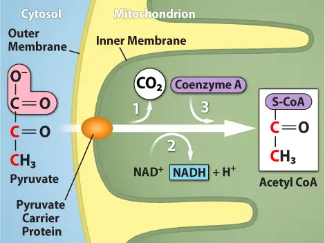
Note that during the second stage of glucose metabolism, whenever a carbon atom is removed, it is bound to two oxygen atoms, producing carbon dioxide, one of the major end products of cellular respiration.
Acetyl CoA to CO2¶
In the presence of oxygen, acetyl CoA delivers its acetyl (2C) group to a four-carbon molecule, oxaloacetate, to form citrate, a six-carbon molecule with three carboxyl groups; this pathway will harvest the remainder of the extractable energy from what began as a glucose molecule and release the remaining four CO2 molecules. This single pathway is called by different names: the citric acid cycle (for the first intermediate formed—citric acid, or citrate—when acetate joins to the oxaloacetate), the TCA cycle (because citric acid or citrate and isocitrate are tricarboxylic acids), and the Krebs cycle, after Hans Krebs, who first identified the steps in the pathway in the 1930s in pigeon flight muscles.
Citric Acid Cycle¶
Like the conversion of pyruvate to acetyl CoA, the citric acid cycle takes place in the matrix of mitochondria. Almost all of the enzymes of the citric acid cycle are soluble, with the single exception of the enzyme succinate dehydrogenase, which is embedded in the inner membrane of the mitochondrion. Unlike glycolysis, the citric acid cycle is a closed loop: the last part of the pathway regenerates the compound used in the first step. The eight steps of the cycle are a series of redox, dehydration, hydration, and decarboxylation reactions that produce two carbon dioxide molecules, one GTP/ATP, and the reduced carriers NADH and FADH2 (Figure 7.11). This is considered an aerobic pathway because the NADH and FADH2 produced must transfer their electrons to the next pathway in the system, which will use oxygen. If this transfer does not occur, the oxidation steps of the citric acid cycle also do not occur. Note that the citric acid cycle produces very little ATP directly and does not directly consume oxygen.
![This illustration shows the eight steps of the citric acid cycle. In the first step, the acetyl group from acetyl uppercase C lower case o upper case A is transferred to a four-carbon oxaloacetate molecule to form a six-carbon citrate molecule. In the second step, citrate is rearranged to form isocitrate. In the third step, isocitrate is oxidized to alpha-ketoglutarate. In the process, one N A D H is formed from N A D superscript plus sign baseline; and one carbon dioxide is released. In the fourth step, alpha-ketoglutarate is oxidized and upper C lower o upper A is added, forming succinyl upper C lower o upper A. In the process, another N A D H is formed and another carbon dioxide is released. In the fifth step, upper C lower o upper A is released from succinyl upper C lower o upper A, forming succinate. In the process, one G T P is formed, which is later converted into A T P. In the sixth step, succinate is oxidized to fumarate, and one F A D is reduced to F A D H subscript 2 baseline. In the seventh step, fumarate is converted into malate. In the eighth step, malate is oxidized to oxaloacetate, and another N A D H is formed.](img/figure-07-03-02.webp)
Steps in the Citric Acid Cycle¶
Step 1. Prior to the first step, a transitional phase occurs during which pyruvic acid is converted to acetyl CoA. Then, the first step of the cycle begins: This condensation step combines the two-carbon acetyl group with a four-carbon oxaloacetate molecule to form a six-carbon molecule of citrate. CoA is bound to a sulfhydryl group (-SH) and diffuses away to eventually combine with another acetyl group. This step is irreversible because it is highly exergonic. The rate of this reaction is controlled by negative feedback and the amount of ATP available. If ATP levels increase, the rate of this reaction decreases. If ATP is in short supply, the rate increases.
Step 2. In step two, citrate loses one water molecule and gains another as citrate is converted into its isomer, isocitrate.
Step 3. In step three, isocitrate is oxidized, producing a five-carbon molecule, α-ketoglutarate, along with a molecule of CO2 and two electrons, which reduce NAD+ to NADH. This step is also regulated by negative feedback from ATP and NADH and a positive effect of ADP.
Step 4. Steps three and four are both oxidation and decarboxylation steps, which as we have seen, release electrons that reduce NAD+to NADH and release carboxyl groups that form CO2 molecules. Alpha-ketoglutarate is the product of step three, and a succinyl group is the product of step four. CoA binds with the succinyl group to form succinyl CoA. The enzyme that catalyzes step four is regulated by feedback inhibition of ATP, succinyl CoA, and NADH.
Step 5. In step five, a carboxyl group is substituted for coenzyme A, and a high-energy bond is formed. This energy is used in substrate-level phosphorylation (during the conversion of the succinyl group to succinate) to form either guanosine triphosphate (GTP) or ATP. There are two forms of the enzyme, called isoenzymes, for this step, depending upon the type of animal tissue in which they are found. One form is found in tissues that use large amounts of ATP, such as heart and skeletal muscle. This form produces ATP. The second form of the enzyme is found in tissues that have a high number of anabolic pathways, such as liver. This form produces GTP. GTP is energetically equivalent to ATP; however, its use is more restricted. In particular, protein synthesis primarily uses GTP.
Step 6. Step six is a dehydrogenation process that converts succinate into fumarate. Two hydrogen atoms are transferred to FAD, reducing it to FADH2. (Note: the energy contained in the electrons of these hydrogens is insufficient to reduce NAD+ but adequate to reduce FAD.) Unlike NADH, this carrier remains attached to the enzyme and transfers the electrons to the electron transport chain directly. This process is made possible by the localization of the enzyme catalyzing this step inside the inner membrane of the mitochondrion.
Step 7. Water is added by hydration to fumarate during step seven, and malate is produced. The last step in the citric acid cycle regenerates oxaloacetate by oxidizing malate. Another molecule of NADH is then produced in the process.
Interactive
View an animation of the citric acid cycle here.
Products of the Citric Acid Cycle¶
Two carbon atoms come into the citric acid cycle from each acetyl group, representing four out of the six carbons of one glucose molecule. Two carbon dioxide molecules are released on each turn of the cycle; however, these do not necessarily contain the most recently added carbon atoms. The two acetyl carbon atoms will eventually be released on later turns of the cycle; thus, all six carbon atoms from the original glucose molecule are eventually incorporated into carbon dioxide. Each turn of the cycle forms three NADH molecules and one FADH2 molecule. These carriers will connect with the last portion of aerobic respiration, the electron transport chain, to produce ATP molecules. One GTP or ATP is also made in each cycle. Several of the intermediate compounds in the citric acid cycle can be used in synthesizing nonessential amino acids; therefore, the cycle is amphibolic (both catabolic and anabolic).
7.4 Oxidative Phosphorylation¶
Learning Objectives
By the end of this section, you will be able to do the following:
- Describe how electrons move through the electron transport chain and explain what happens to their energy levels during this process
- Explain how a proton (H+) gradient is established and maintained by the electron transport chain
You have just read about two pathways in glucose catabolism—glycolysis and the citric acid cycle—that generate ATP. Most of the ATP generated during the aerobic catabolism of glucose, however, is not generated directly from these pathways. Instead, it is derived from a process that begins by moving electrons through a series of electron carriers that undergo redox reactions. This process causes hydrogen ions to accumulate within the intermembranous space. Therefore, a concentration gradient forms in which hydrogen ions diffuse out of the intermembranous space into the mitochondrial matrix by passing through ATP synthase. The current of hydrogen ions powers the catalytic action of ATP synthase, which phosphorylates ADP, producing ATP.
Electron Transport Chain¶
The electron transport chain (Figure 7.12) is the last component of aerobic respiration and is the only part of glucose metabolism that uses atmospheric oxygen. Oxygen continuously diffuses into plant tissues (typically through stomata), as well as into fungi and bacteria; however, in animals, oxygen enters the body through a variety of respiratory systems. Electron transport is a series of redox reactions that resembles a relay race or bucket brigade in that electrons are passed rapidly from one component to the next, to the endpoint of the chain where the electrons reduce molecular oxygen and, along with associated protons, produces water. There are four complexes composed of proteins, labeled I through IV in Figure 7.12, and the aggregation of these four complexes, together with associated mobile, accessory electron carriers, is called the electron transport chain. The electron transport chain is present with multiple copies in the inner mitochondrial membrane of eukaryotes and within the plasma membrane of prokaryotes.
![This illustration shows the electron transport chain embedded in the inner mitochondrial membrane. The electron transport chain consists of four electron complexes. Complex I oxidizes N A D H to N A D superscript plus sign baseline; and simultaneously pumps a proton across the membrane to the intermembrane space. The two electrons released from N A D H are shuttled to coenzyme Q, then to complex I I I, to cytochrome c, to complex I V, then to molecular oxygen. In the process, two more protons are pumped across the membrane to the intermembrane space, and molecular oxygen is reduced to form water. Complex I I removes two electrons from F A D H subscript 2 baseline, thereby forming F A D. The electrons are shuttled to coenzyme Q, then to complex I I I, cytochrome c, complex I V, and molecular oxygen as in the case of N A D H oxidation.](img/figure-07-04-01-1396.webp)
Complex I¶
First, two electrons are carried to the first complex via NADH. This complex, labeled I, is composed of flavin mononucleotide (FMN) and an iron-sulfur (Fe-S)-containing protein. FMN, which is derived from vitamin B2 (also called riboflavin), is one of several prosthetic groups or cofactors in the electron transport chain. A prosthetic group is a nonprotein molecule required for the activity of a protein. Prosthetic groups are organic or inorganic, nonpeptide molecules bound to a protein that facilitate its function. Prosthetic groups include coenzymes, which are the prosthetic groups of enzymes. The enzyme in complex I is NADH dehydrogenase and is composed of 44 separate polypeptide chains. Complex I can pump four hydrogen ions across the membrane from the matrix into the intermembrane space, and it is in this way that the hydrogen ion gradient is established and maintained between the two compartments separated by the inner mitochondrial membrane.
Q and Complex II¶
Complex II directly receives FADH2—which does not pass through complex I. The compound connecting the first and second complexes to the third is ubiquinone B. The Q molecule is lipid soluble and freely moves through the hydrophobic core of the membrane. Once it is reduced (QH2), ubiquinone delivers its electrons to the next complex in the electron transport chain. Q receives the electrons derived from NADH from complex I, and the electrons derived from FADH2 from complex II. This enzyme and FADH2 form a small complex that delivers electrons directly to the electron transport chain, bypassing the first complex. Since these electrons bypass and thus do not energize the proton pump in the first complex, fewer ATP molecules are made from the FADH2 electrons. The number of ATP molecules ultimately obtained is directly proportional to the number of protons pumped across the inner mitochondrial membrane.
Complex III¶
The third complex is composed of cytochrome b—another Fe-S protein, a Rieske center (2Fe-2S center), and cytochrome c proteins. This complex is also called cytochrome oxidoreductase. Cytochrome proteins have a prosthetic group of heme. The heme molecule is similar to the heme in hemoglobin, but it carries electrons, not oxygen. As a result, the iron ion at its core is reduced and oxidized as it passes the electrons, fluctuating between different oxidation states: Fe++ (reduced) and Fe+++ (oxidized). The heme molecules in the cytochromes have slightly different characteristics due to the effects of the different proteins binding to them, giving slightly different characteristics to each complex. Complex III pumps protons through the membrane and passes its electrons to cytochrome c for transport to the fourth complex of proteins and enzymes. (Cytochrome c receives electrons from Q; however, whereas Q carries pairs of electrons, cytochrome c can accept only one at a time.)
Complex IV¶
The fourth complex is composed of cytochrome proteins c, a, and a3. This complex contains two heme groups (one in each of the two cytochromes, a, and a3) and three copper ions (a pair of CuA and one CuB in cytochrome a3). The cytochromes hold an oxygen molecule very tightly between the iron and copper ions until the oxygen is completely reduced by the gain of two electrons. The reduced oxygen then picks up two hydrogen ions from the surrounding medium to make water (H2O). The removal of the hydrogen ions from the system contributes to the ion gradient that forms the foundation for the process of chemiosmosis.
Chemiosmosis¶
In chemiosmosis, the free energy from the series of redox reactions just described is used to pump hydrogen ions (protons) across the mitochondrial membrane. The uneven distribution of H+ ions across the membrane establishes both concentration and electrical gradients (thus, an electrochemical gradient), owing to the hydrogen ions’ positive charge and their aggregation on one side of the membrane.
If the membrane were continuously open to simple diffusion by the hydrogen ions, the ions would tend to diffuse back across into the matrix, driven by the concentrations producing their electrochemical gradient. Recall that many ions cannot diffuse through the nonpolar regions of phospholipid membranes without the aid of ion channels. Similarly, hydrogen ions in the matrix space can only pass through the inner mitochondrial membrane by an integral membrane protein called ATP synthase (Figure 7.13). This complex protein acts as a tiny generator, turned by the force of the hydrogen ions diffusing through it, down their electrochemical gradient. The turning of parts of this molecular machine facilitates the addition of a phosphate to ADP, forming ATP, using the potential energy of the hydrogen ion gradient.
Visual Connection
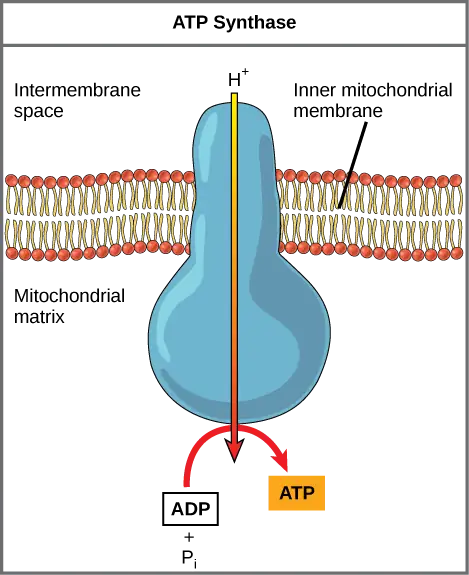
Dinitrophenol (DNP) is an “uncoupler” that makes the inner mitochondrial membrane “leaky” to protons. It was used until 1938 as a weight-loss drug. What effect would you expect DNP to have on the change in pH across the inner mitochondrial membrane? Why do you think this might be an effective weight-loss drug?
Chemiosmosis (Figure 7.14) is used to generate 90 percent of the ATP made during aerobic glucose catabolism; it is also the method used in the light reactions of photosynthesis to harness the energy of sunlight in the process of photophosphorylation. Recall that the production of ATP using the process of chemiosmosis in mitochondria is called oxidative phosphorylation. The overall result of these reactions is the production of ATP from the energy of the electrons removed from hydrogen atoms. These atoms were originally part of a glucose molecule. At the end of the pathway, the electrons are used to reduce an oxygen molecule to oxygen ions. The extra electrons on the oxygen attract hydrogen ions (protons) from the surrounding medium, and water is formed. Thus, oxygen is the final electron acceptor in the electron transport chain.
Visual Connection
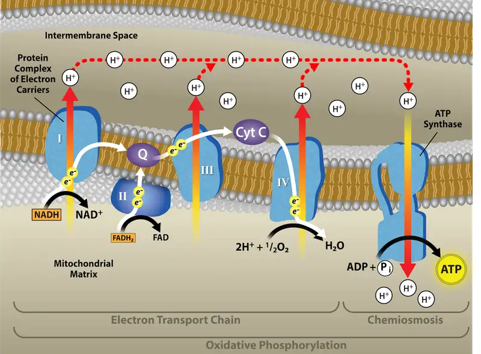
Cyanide inhibits cytochrome c oxidase, a component of the electron transport chain. If cyanide poisoning occurs, would you expect the pH of the intermembrane space to increase or decrease? What effect would cyanide have on ATP synthesis?
ATP Yield¶
The number of ATP molecules generated from the catabolism of glucose varies. For example, the number of hydrogen ions that the electron transport chain complexes can pump through the membrane varies between species. Another source of variance stems from the shuttle of electrons across the membranes of the mitochondria. (The NADH generated from glycolysis cannot easily enter mitochondria.) Thus, electrons are picked up on the inside of mitochondria by either NAD+ or FAD+. As you have learned earlier, these FAD+ molecules can transport fewer ions; consequently, fewer ATP molecules are generated when FAD+ acts as a carrier. NAD+ is used as the electron transporter in the liver and FAD+ acts in the brain.
Another factor that affects the yield of ATP molecules generated from glucose is the fact that intermediate compounds in these pathways are also used for other purposes. Glucose catabolism connects with the pathways that build or break down all other biochemical compounds in cells, and the result is somewhat messier than the ideal situations described thus far. For example, sugars other than glucose are fed into the glycolytic pathway for energy extraction. In addition, the five-carbon sugars that form nucleic acids are made from intermediates in glycolysis. Certain nonessential amino acids can be made from intermediates of both glycolysis and the citric acid cycle. Lipids, such as cholesterol and triglycerides, are also made from intermediates in these pathways, and both amino acids and triglycerides are broken down for energy through these pathways. Overall, in living systems, these pathways of glucose catabolism extract about 34 percent of the energy contained in glucose, with the remainder being released as heat.
7.5 Metabolism without Oxygen¶
Learning Objectives
By the end of this section, you will be able to do the following:
- Discuss the fundamental difference between anaerobic cellular respiration and fermentation
- Describe the type of fermentation that readily occurs in animal cells and the conditions that initiate that fermentation
In aerobic respiration, the final electron acceptor is an oxygen molecule, O2. If aerobic respiration occurs, then ATP will be produced using the energy of high-energy electrons carried by NADH or FADH2to the electron transport chain. If aerobic respiration does not occur, NADH must be reoxidized to NAD+ for reuse as an electron carrier for the glycolytic pathway to continue. How is this done? Some living systems use an organic molecule as the final electron acceptor. Processes that use an organic molecule to regenerate NAD+ from NADH are collectively referred to as fermentation. In contrast, in some living systems, the electron transport chain (ETC) uses an inorganic molecule as a final electron acceptor, which is called anaerobic cellular respiration. Both processes allow organisms to convert energy for their use in the absence of oxygen. Both methods are anaerobic, in which organisms convert energy for their use in the absence of oxygen.
Interactive
Visit this site to see fermentation in action.
Anaerobic Cellular Respiration¶
Certain prokaryotes, including some species in the domains Bacteria and Archaea, use anaerobic respiration. For example, a group of archaeans called methanogens reduces carbon dioxide to methane to oxidize NADH. These microorganisms are found in soil and in the digestive tracts of ruminants, such as cows and sheep. Similarly, sulfate-reducing bacteria, most of which are anaerobic (Figure 7.15), reduce sulfate to hydrogen sulfide to regenerate NAD+ from NADH.
Lactic Acid Fermentation¶
The fermentation method used by animals and certain bacteria, such as those in yogurt, is lactic acid fermentation (Figure 7.16). This type of fermentation is used routinely in mammalian red blood cells, which do not have mitochondria, and in skeletal muscle that has an insufficient oxygen supply to allow aerobic respiration to continue (that is, in muscles used to the point of fatigue). In muscles, lactic acid accumulation must be removed by the blood circulation, and when the lactic acid loses a hydrogen, the resulting lactate is brought to the liver for further metabolism. The chemical reactions of lactic acid fermentation are the following:
The enzyme used in this reaction is lactate dehydrogenase (LDH). The reaction can proceed in either direction, but the reaction from left to right is inhibited by acidic conditions. Such lactic acid accumulation was once believed to cause muscle stiffness, fatigue, and soreness, although more recent research disputes this hypothesis. Once the lactic acid has been removed from the muscle and circulated to the liver, it can be reconverted into pyruvic acid and further catabolized for energy.
Visual Connection
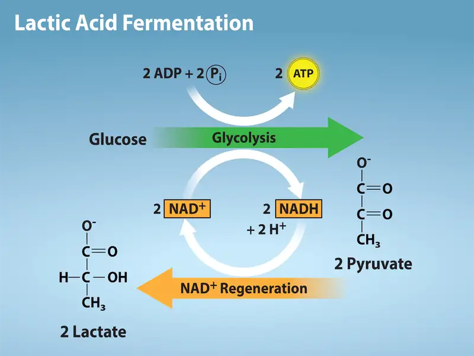
Tremetol, a metabolic poison found in the white snakeroot plant, prevents the metabolism of lactate. When cows eat this plant, tremetol is concentrated in the milk they produce. Humans who consume the milk can become seriously ill. Symptoms of this disease, which include vomiting, abdominal pain, and tremors, become worse after exercise. Why do you think this is the case?
Alcohol Fermentation¶
Another familiar fermentation process is alcohol fermentation (Figure 7.17), which produces ethanol. The first chemical reaction of alcohol fermentation is the following (CO2 does not participate in the second reaction):
The first reaction is catalyzed by pyruvate decarboxylase, a cytoplasmic enzyme, with a coenzyme of thiamine pyrophosphate (TPP, derived from vitamin B1 and also called thiamine). A carboxyl group is removed from pyruvic acid, releasing carbon dioxide as a gas. The loss of carbon dioxide reduces the size of the molecule by one carbon, producing acetaldehyde. The second reaction is catalyzed by alcohol dehydrogenase to oxidize NADH to NAD+ and reduce acetaldehyde to ethanol. The fermentation of pyruvic acid by yeast produces the ethanol found in alcoholic beverages. Ethanol tolerance of yeast is variable, ranging from about 5 percent to 21 percent, depending on the yeast strain and environmental conditions.
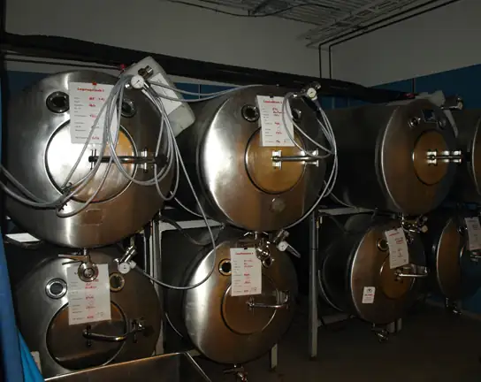
Other Types of Fermentation¶
Other fermentation methods take place in bacteria. We should note that many prokaryotes are facultatively anaerobic. This means that they can switch between aerobic respiration and fermentation, depending on the availability of free oxygen. Certain prokaryotes, such as Clostridia, are obligate anaerobes. Obligate anaerobes live and grow in the absence of molecular oxygen. Oxygen is a poison to these microorganisms and kills them on exposure. We should also note that most forms of fermentation produce gas (an exception is lactic acid fermentation which, in most cases, does not result in gas production). The production of particular types of gas is used as an indicator of the fermentation of specific carbohydrates, which plays a role in the laboratory identification of the bacteria. Various methods of fermentation are used by assorted organisms to ensure an adequate supply of NAD+ for the sixth step in glycolysis. Without these pathways, this step would not occur, and ATP could not be harvested from the breakdown of glucose.
7.6 Connections of Carbohydrate, Protein, and Lipid Metabolic Pathways¶
Learning Objectives
By the end of this section, you will be able to do the following:
- Discuss the ways in which carbohydrate metabolic pathways, glycolysis, and the citric acid cycle interrelate with protein and lipid metabolic pathways
- Explain why metabolic pathways are not considered closed systems
You have learned about the catabolism of glucose, which provides energy to living cells. But living things consume organic compounds other than glucose for food. How does a turkey sandwich end up as ATP in your cells? This happens because all of the catabolic pathways for carbohydrates, proteins, and lipids eventually connect into glycolysis and the citric acid cycle pathways (see Figure 7.19). Metabolic pathways should be thought of as porous and interconnecting—that is, substances enter from other pathways, and intermediates leave for other pathways. These pathways are not closed systems! Many of the substrates, intermediates, and products in a particular pathway are reactants in other pathways.
Connections of Other Sugars to Glucose Metabolism¶
Glycogen, a polymer of glucose, is an energy storage molecule in animals. When there is adequate ATP present, excess glucose is stored as glycogen in both liver and muscle cells. The glycogen will be hydrolyzed into glucose 1-phosphate monomers (G-1-P) if blood sugar levels drop. The presence of glycogen as a source of glucose allows ATP to be produced for a longer period of time during exercise. Glycogen is broken down into glucose-1-phosphate (G-1-P) and converted into glucose-6-phosphate (G-6-P) in both muscle and liver cells, and this product enters the glycolytic pathway.
Sucrose is a disaccharide with a molecule of glucose and a molecule of fructose bonded together with a glycosidic linkage. Fructose is one of the three “dietary” monosaccharides, along with glucose and galactose (part of the milk sugar disaccharide lactose), which are absorbed directly into the bloodstream during digestion. The catabolism of fructose, galactose, and glucose produces the same number of ATP molecules.
Connections of Proteins to Glucose Metabolism¶
Proteins are hydrolyzed by a variety of enzymes in cells. Most of the time, the amino acids are recycled into the synthesis of new proteins. If there are excess amino acids, however, or if the body is in a state of starvation, some amino acids will be shunted into the pathways of glucose catabolism (Figure 7.18). It is very important to note that each amino acid must have its amino group removed prior to entry into these pathways. The amino group is converted into ammonia. In mammals, the liver synthesizes urea from two ammonia molecules and a carbon dioxide molecule. Thus, urea is the principal waste product in mammals, produced from the nitrogen originating in amino acids, and it leaves the body in urine. It should be noted that amino acids can be synthesized from the intermediates and reactants in the cellular respiration cycle.
![This illustration shows that the amino acids alanine, glycine, threonine, cysteine, and serine can be converted into pyruvate. Leucine, lysine, phenylalanine, tyrosine, tryptophan, and isoleucine can be converted into acetyl upper case C lower case o upper case A. Arginine, proline, histidine, glutamine, and glutamate can be converted into alpha-ketoglutarate. Isoleucine, valine, methionine, and threonine can be converted into succinyl upper C lower o upper A. Tyrosine and phenylalanine can be converted into fumarate, and aspartate and asparagine can be converted into oxaloacetate. All of these conversion products are inputs to or intermediates in the citric acid cycle, and can be fed into the citric acid cycle at the appropriate point.](img/figure-07-06-01.webp)
Connections of Lipid and Glucose Metabolisms¶
The lipids connected to the glucose pathway include cholesterol and triglycerides. Cholesterol is a lipid that contributes to cell membrane flexibility and is a precursor of steroid hormones. The synthesis of cholesterol starts with acetyl groups and proceeds in only one direction. The process cannot be reversed.
Triglycerides—made from the bonding of glycerol and three fatty acids—are a form of long-term energy storage in animals. Animals can make most of the fatty acids they need. Triglycerides can be both made and broken down through parts of the glucose catabolism pathways. Glycerol can be phosphorylated to glycerol-3-phosphate, which continues through glycolysis. Fatty acids are catabolized in a process called beta-oxidation, which takes place in the matrix of the mitochondria and converts their fatty acid chains into two-carbon units of acetyl groups. The acetyl groups are picked up by CoA to form acetyl CoA that proceeds into the citric acid cycle.
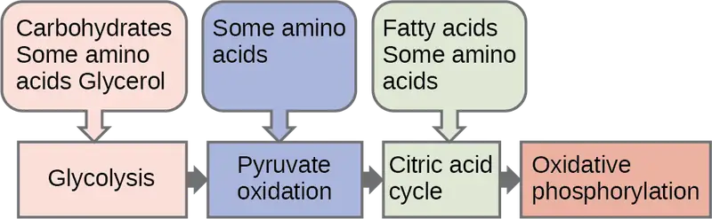
Evolution Connection: Pathways of Photosynthesis and Cellular Metabolism
The processes of photosynthesis and cellular metabolism consist of several very complex pathways. It is generally thought that the first cells arose in an aqueous environment—a “soup” of nutrients—possibly on the surface of some porous clays, perhaps in warm marine environments. If these cells reproduced successfully and their numbers climbed steadily, it follows that the cells would begin to deplete the nutrients from the medium in which they lived as they shifted the nutrients into the components of their own bodies. This hypothetical situation would have resulted in natural selection favoring those organisms that could exist by using the nutrients that remained in their environment and by manipulating these nutrients into materials upon which they could survive. Selection would favor those organisms that could extract maximal value from the nutrients to which they had access.
An early form of photosynthesis developed that harnessed the sun’s energy using water as a source of hydrogen atoms, but this pathway did not produce free oxygen (anoxygenic photosynthesis). (Another type of anoxygenic photosynthesis did not produce free oxygen because it did not use water as the source of hydrogen ions; instead, it used materials such as hydrogen sulfide and consequently produced sulfur). It is thought that glycolysis developed at this time and could take advantage of the simple sugars being produced but that these reactions were unable to fully extract the energy stored in the carbohydrates. The development of glycolysis probably predated the evolution of photosynthesis, as it was well suited to extract energy from materials spontaneously accumulating in the “primeval soup.” A later form of photosynthesis used water as a source of electrons and hydrogen and generated free oxygen. Over time, the atmosphere became oxygenated, but not before the oxygen released oxidized metals in the ocean and created a “rust” layer in the sediment, permitting the dating of the rise of the first oxygenic photosynthesizers. Living things adapted to exploit this new atmosphere that allowed aerobic respiration as we know it to evolve. When the full process of oxygenic photosynthesis developed and the atmosphere became oxygenated, cells were finally able to use the oxygen expelled by photosynthesis to extract considerably more energy from the sugar molecules using the citric acid cycle and oxidative phosphorylation.
7.7 Regulation of Cellular Respiration¶
Learning Objectives
By the end of this section, you will be able to do the following:
- Describe how feedback inhibition would affect the production of an intermediate or product in a pathway
- Identify the mechanism that controls the rate of the transport of electrons through the electron transport chain
Cellular respiration must be regulated in order to provide balanced amounts of energy in the form of ATP. The cell also must generate a number of intermediate compounds that are used in the anabolism and catabolism of macromolecules. Without controls, metabolic reactions would quickly come to a standstill as the forward and backward reactions reached a state of equilibrium. Resources would be used inappropriately. A cell does not need the maximum amount of ATP that it can make all the time: At times, the cell needs to shunt some of the intermediates to pathways for amino acid, protein, glycogen, lipid, and nucleic acid production. In short, the cell needs to control its metabolism.
Regulatory Mechanisms¶
A variety of mechanisms is used to control cellular respiration. Some type of control exists at each stage of glucose metabolism. Access of glucose to the cell can be regulated using the GLUT (glucose transporter) proteins that transport glucose (Figure 7.20). Different forms of the GLUT protein control passage of glucose into the cells of specific tissues.
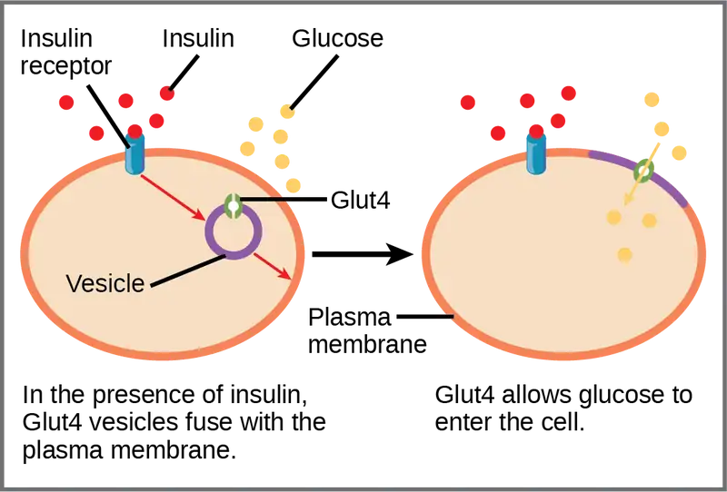
Some reactions are controlled by having two different enzymes—one each for the two directions of a reversible reaction. Reactions that are catalyzed by only one enzyme can go to equilibrium, stalling the reaction. In contrast, if two different enzymes (each specific for a given direction) are necessary for a reversible reaction, the opportunity to control the rate of the reaction increases, and equilibrium is not reached.
A number of enzymes involved in each of the pathways—in particular, the enzyme catalyzing the first committed reaction of the pathway—are controlled by attachment of a molecule to an allosteric site on the protein. The molecules most commonly used in this capacity are the nucleotides ATP, ADP, AMP, NAD+, and NADH. These regulators—allosteric effectors—may increase or decrease enzyme activity, depending on the prevailing conditions. The allosteric effector alters the steric structure of the enzyme, usually affecting the configuration of the active site. This alteration of the protein’s (the enzyme’s) structure either increases or decreases its affinity for its substrate, with the effect of increasing or decreasing the rate of the reaction. The attachment signals to the enzyme. This binding can increase or decrease the enzyme’s activity, providing a feedback mechanism. This feedback type of control is effective as long as the chemical affecting it is attached to the enzyme. Once the overall concentration of the chemical decreases, it will diffuse away from the protein, and the control is relaxed.
Control of Catabolic Pathways¶
Enzymes, proteins, electron carriers, and pumps that play roles in glycolysis, the citric acid cycle, and the electron transport chain tend to catalyze nonreversible reactions. In other words, if the initial reaction takes place, the pathway is committed to proceeding with the remaining reactions. Whether a particular enzyme activity is released depends upon the energy needs of the cell (as reflected by the levels of ATP, ADP, and AMP).
Glycolysis¶
The control of glycolysis begins with the first enzyme in the pathway, hexokinase (Figure 7.21). This enzyme catalyzes the phosphorylation of glucose, which helps to prepare the compound for cleavage in a later step. The presence of the negatively charged phosphate in the molecule also prevents the sugar from leaving the cell. When hexokinase is inhibited, glucose diffuses out of the cell and does not become a substrate for the respiration pathways in that tissue. The product of the hexokinase reaction is glucose-6-phosphate, which accumulates when a later enzyme, phosphofructokinase, is inhibited.
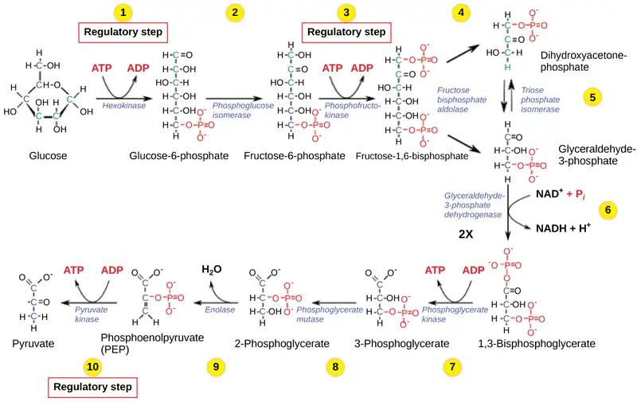
Phosphofructokinase is the main enzyme controlled in glycolysis. High levels of ATP or citrate or a lower, more acidic pH decreases the enzyme’s activity. An increase in citrate concentration can occur because of a blockage in the citric acid cycle. Fermentation, with its production of organic acids such as lactic acid, frequently accounts for the increased acidity in a cell; however, the products of fermentation do not typically accumulate in cells.
The last step in glycolysis is catalyzed by pyruvate kinase. The pyruvate produced can proceed to be catabolized or converted into the amino acid alanine. If no more energy is needed and alanine is in adequate supply, the enzyme is inhibited. The enzyme’s activity is increased when fructose-1,6-bisphosphate levels increase. (Recall that fructose-1,6-bisphosphate is an intermediate in the first half of glycolysis.) The regulation of pyruvate kinase involves phosphorylation by kinase, resulting in a less-active enzyme. Dephosphorylation by a phosphatase reactivates it. Pyruvate kinase is also regulated by ATP (a negative allosteric effect).
If more energy is needed, more pyruvate will be converted into acetyl CoA through the action of pyruvate dehydrogenase. If either acetyl groups or NADH accumulates, there is less need for the reaction, and the rate decreases. Pyruvate dehydrogenase is also regulated by phosphorylation: a kinase phosphorylates it to form an inactive enzyme, and a phosphatase reactivates it. The kinase and the phosphatase are also regulated.
Citric Acid Cycle¶
The citric acid cycle is controlled through the enzymes that catalyze the reactions that make the first two molecules of NADH (Figure 7.11). These enzymes are isocitrate dehydrogenase and α-ketoglutarate dehydrogenase. When adequate ATP and NADH levels are available, the rates of these reactions decrease. When more ATP is needed, as reflected in rising ADP levels, the rate increases. Alpha-ketoglutarate dehydrogenase will also be affected by the levels of succinyl CoA—a subsequent intermediate in the cycle—causing a decrease in activity. A decrease in the rate of operation of the pathway at this point is not necessarily negative, as the increased levels of the α-ketoglutarate not used by the citric acid cycle can be used by the cell for amino acid (glutamate) synthesis.
Electron Transport Chain¶
Specific enzymes of the electron transport chain are unaffected by feedback inhibition, but the rate of electron transport through the pathway is affected by the levels of ADP and ATP. Greater ATP consumption by a cell is indicated by a buildup of ADP. As ATP usage decreases, the concentration of ADP decreases, and now, ATP begins to build up in the cell. This change in the relative concentration of ADP to ATP triggers the cell to slow down the electron transport chain.
Interactive
Visit this site to see an animation of the electron transport chain and ATP synthesis.
For a summary of feedback controls in cellular respiration, see Table 7.1.
Table 7.1
| Summary of Feedback Controls in Cellular Respiration | |||
|---|---|---|---|
| Pathway | Enzyme affected | Elevated levels of effector | Effect on pathway activity |
| glycolysis | hexokinase | glucose-6-phosphate | decrease |
| phosphofructokinase | low-energy charge (ATP, AMP), fructose-6-phosphate via fructose-2,6-bisphosphate | increase | |
| high-energy charge (ATP, AMP), citrate, acidic pH | decrease | ||
| pyruvate kinase | fructose-1,6-bisphosphate | increase | |
| high-energy charge (ATP, AMP), alanine | decrease | ||
| pyruvate to acetyl CoA conversion | pyruvate dehydrogenase | ADP, pyruvate | increase |
| acetyl CoA, ATP, NADH | decrease | ||
| citric acid cycle | isocitrate dehydrogenase | ADP | increase |
| ATP, NADH | decrease | ||
| α-ketoglutarate dehydrogenase | calcium ions, ADP | increase | |
| ATP, NADH, succinyl CoA | decrease | ||
| electron transport chain | ADP | increase | |
| ATP | decrease | ||
Chapter Review¶
Key Terms¶
- acetyl CoA
- combination of an acetyl group derived from pyruvic acid and coenzyme A, which is made from pantothenic acid (a B-group vitamin)
- aerobic respiration
- process in which organisms convert energy in the presence of oxygen
- anaerobic
- process that does not use oxygen
- anaerobic cellular respiration
- process in which organisms convert energy for their use in the absence of oxygen
- ATP synthase
- (also F1F0 ATP synthase) membrane-embedded protein complex that adds a phosphate to ADP with energy from protons diffusing through it
- chemiosmosis
- process in which there is a production of adenosine triphosphate (ATP) in cellular metabolism by the involvement of a proton gradient across a membrane
- citric acid cycle
- (also Krebs cycle) series of enzyme-catalyzed chemical reactions of central importance in all living cells for extraction of energy from carbohydrates
- dephosphorylation
- removal of a phosphate group from a molecule
- fermentation
- process of regenerating NAD+ with either an inorganic or organic compound serving as the final electron acceptor; occurs in the absence of oxygen
- GLUT protein
- integral membrane protein that transports glucose
- glycolysis
- process of breaking glucose into two three-carbon molecules with the production of ATP and NADH
- isomerase
- enzyme that converts a molecule into its isomer
- Krebs cycle
- (also citric acid cycle) alternate name for the citric acid cycle, named after Hans Krebs, who first identified the steps in the pathway in the 1930s in pigeon flight muscles; see citric acid cycle
- oxidative phosphorylation
- production of ATP using the process of chemiosmosis in the presence of oxygen
- phosphorylation
- addition of a high-energy phosphate to a compound, usually a metabolic intermediate, a protein, or ADP
- prosthetic group
- (also prosthetic cofactor) molecule bound to a protein that facilitates the function of the protein
- pyruvate
- three-carbon keto acid that can be decarboxylated and oxidized to make acetyl CoA, which enters the citric acid cycle under aerobic conditions; the end product of glycolysis
- redox reaction
- chemical reaction that consists of the coupling of an oxidation reaction and a reduction reaction
- substrate-level phosphorylation
- production of ATP from ADP using the excess energy from a chemical reaction and a phosphate group from a reactant
- TCA cycle
- (also citric acid cycle) alternate name for the citric acid cycle, named after the group name for citric acid, tricarboxylic acid (TCA); see citric acid cycle
- ubiquinone
- soluble electron transporter in the electron transport chain that connects the first or second complex to the third
Summary¶
7.1 Energy in Living Systems¶
ATP functions as the energy currency for cells. It allows the cell to store energy briefly and transport it within the cell to support endergonic chemical reactions. The structure of ATP is that of an RNA nucleotide with three phosphates attached. As ATP is used for energy, a phosphate group or two are detached, and either ADP or AMP is produced. Energy derived from glucose catabolism is used to convert ADP into ATP. When ATP is used in a reaction, the third phosphate is temporarily attached to a substrate in a process called phosphorylation. The two processes of ATP regeneration that are used in conjunction with glucose catabolism are substrate-level phosphorylation and oxidative phosphorylation through the process of chemiosmosis.
7.2 Glycolysis¶
Glycolysis is the first pathway within the cytoplasm used in the breakdown of glucose to extract energy. It was probably one of the earliest metabolic pathways to evolve and is used by nearly all of the organisms on Earth. Glycolysis consists of two parts: The first part prepares the six-carbon ring of glucose for cleavage into two three-carbon sugars. ATP is invested in the process during this half to energize the separation. The second half of glycolysis extracts ATP and high-energy electrons from hydrogen atoms and attaches them to NAD+. Two ATP molecules are invested in the first half and four ATP molecules are formed by substrate phosphorylation during the second half. This produces a net gain of two ATP and two NADH molecules for the cell.
7.3 Oxidation of Pyruvate and the Citric Acid Cycle¶
In the presence of oxygen, pyruvate is transformed into an acetyl group attached to a carrier molecule of coenzyme A. The resulting acetyl CoA can enter several pathways, but most often, the acetyl group is delivered to the citric acid cycle for further catabolism. During the conversion of pyruvate into the acetyl group, a molecule of carbon dioxide and two high-energy electrons are removed. The carbon dioxide accounts for two (conversion of two pyruvate molecules) of the six carbons of the original glucose molecule. The electrons are picked up by NAD+, and the NADH carries the electrons to a later pathway for ATP production. At this point, the glucose molecule that originally entered cellular respiration has been completely oxidized. Chemical potential energy stored within the glucose molecule has been transferred to electron carriers or has been used to synthesize a few ATPs.
The citric acid cycle is a series of redox and decarboxylation reactions that removes high-energy electrons and carbon dioxide. The electrons, temporarily stored in molecules of NADH and FADH2, are used to generate ATP in a subsequent pathway. One molecule of either GTP or ATP is produced by substrate-level phosphorylation on each turn of the cycle. There is no comparison of the cyclic pathway with a linear one.
7.4 Oxidative Phosphorylation¶
The electron transport chain is the portion of aerobic respiration that uses free oxygen as the final electron acceptor of the electrons removed from the intermediate compounds in glucose catabolism. The electron transport chain is composed of four large, multiprotein complexes embedded in the inner mitochondrial membrane and two small diffusible electron carriers shuttling electrons between them. The electrons are passed through a series of redox reactions, with a small amount of free energy used at three points to transport hydrogen ions across a membrane. This process contributes to the gradient used in chemiosmosis. The electrons passing through the electron transport chain gradually lose energy. High-energy electrons donated to the chain by either NADH or FADH2 complete the chain, as low-energy electrons reduce oxygen molecules and form water. The level of free energy of the electrons drops from about 60 kcal/mol in NADH or 45 kcal/mol in FADH2 to about 0 kcal/mol in water. The end products of the electron transport chain are water and ATP. A number of intermediate compounds of the citric acid cycle can be diverted into the anabolism of other biochemical molecules, such as nonessential amino acids, sugars, and lipids. These same molecules can serve as energy sources for the glucose pathways.
7.5 Metabolism without Oxygen¶
If NADH cannot be oxidized through aerobic respiration, another electron acceptor is used. Most organisms will use some form of fermentation to accomplish the regeneration of NAD+, ensuring the continuation of glycolysis. The regeneration of NAD+ in fermentation is not accompanied by ATP production; therefore, the potential of NADH to produce ATP using an electron transport chain is not utilized.
7.6 Connections of Carbohydrate, Protein, and Lipid Metabolic Pathways¶
The breakdown and synthesis of carbohydrates, proteins, and lipids connect with the pathways of glucose catabolism. The simple sugars are galactose, fructose, glycogen, and pentose. These are catabolized during glycolysis. The amino acids from proteins connect with glucose catabolism through pyruvate, acetyl CoA, and components of the citric acid cycle. Cholesterol synthesis starts with acetyl groups, and the components of triglycerides come from glycerol-3-phosphate from glycolysis and acetyl groups produced in the mitochondria from pyruvate.
7.7 Regulation of Cellular Respiration¶
Cellular respiration is controlled by a variety of means. The entry of glucose into a cell is controlled by the transport proteins that aid glucose passage through the cell membrane. Most of the control of the respiration processes is accomplished through the control of specific enzymes in the pathways. This is a type of negative feedback mechanism, turning the enzymes off. The enzymes respond most often to the levels of the available nucleosides ATP, ADP, AMP, NAD+, and FAD. Other intermediates of the pathway also affect certain enzymes in the systems.
Review Questions¶
7.1 Energy in Living Systems¶
1. The energy currency used by cells is ________.
- ATP
- ADP
- AMP
- adenosine
Answer
A
2. A reducing chemical reaction ________.
- reduces the compound to a simpler form
- adds an electron to the substrate
- removes a hydrogen atom from the substrate
- is a catabolic reaction
Answer
B
7.2 Glycolysis¶
3. During the second half of glycolysis, what occurs?
- ATP is used up.
- Fructose is split in two.
- ATP is made.
- Glucose becomes fructose.
Answer
C
7.3 Oxidation of Pyruvate and the Citric Acid Cycle¶
4. What is removed from pyruvate during its conversion into an acetyl group?
- oxygen
- ATP
- B vitamin
- carbon dioxide
Answer
D
5. What do the electrons added to NAD+ do?
- They become part of a fermentation pathway.
- They go to another pathway for ATP production.
- They energize the entry of the acetyl group into the citric acid cycle.
- They are converted to NADP.
Answer
B
6. GTP or ATP is produced during the conversion of ________.
- isocitrate into α-ketoglutarate
- succinyl CoA into succinate
- fumarate into malate
- malate into oxaloacetate
Answer
B
7. How many NADH molecules are produced on each turn of the citric acid cycle?
- one
- two
- three
- four
Answer
C
7.4 Oxidative Phosphorylation¶
8. What compound receives electrons from NADH?
- FMN
- ubiquinone
- cytochrome c1
- oxygen
Answer
A
9. Chemiosmosis involves ________.
- the movement of electrons across the cell membrane
- the movement of hydrogen atoms across a mitochondrial membrane
- the movement of hydrogen ions across a mitochondrial membrane
- the movement of glucose through the cell membrane
Answer
C
7.5 Metabolism without Oxygen¶
10. Which of the following fermentation methods can occur in animal skeletal muscles?
- lactic acid fermentation
- alcohol fermentation
- mixed acid fermentation
- propionic fermentation
Answer
A
7.6 Connections of Carbohydrate, Protein, and Lipid Metabolic Pathways¶
11. A major connection for sugars in glycolysis is ________.
- glucose-6-phosphate
- fructose-1,6-bisphosphate
- dihydroxyacetone phosphate
- phosphoenolpyruvate
Answer
A
12. Beta-oxidation is ________.
- the breakdown of sugars
- the assembly of sugars
- the breakdown of fatty acids
- the removal of amino groups from amino acids
Answer
C
7.7 Regulation of Cellular Respiration¶
13. The effect of high levels of ADP is to ________ in cellular respiration.
- increase the activity of specific enzymes
- decrease the activity of specific enzymes
- have no effect on the activity of specific enzymes
- slow down the pathway
Answer
A
14. The control of which enzyme exerts the most control on glycolysis?
- hexokinase
- phosphofructokinase
- glucose-6-phosphatase
- aldolase
Answer
B
Critical Thinking Questions¶
7.1 Energy in Living Systems¶
15. Why is it beneficial for cells to use ATP rather than energy directly from the bonds of carbohydrates? What are the greatest drawbacks to harnessing energy directly from the bonds of several different compounds?
Answer
ATP provides the cell with a way to handle energy in an efficient manner. The molecule can be charged, stored, and used as needed. Moreover, the energy from hydrolyzing ATP is delivered as a consistent amount. Harvesting energy from the bonds of several different compounds would result in energy deliveries of different quantities.
7.2 Glycolysis¶
16. Nearly all organisms on Earth carry out some form of glycolysis. How does this fact support or not support the assertion that glycolysis is one of the oldest metabolic pathways?
Answer
If glycolysis evolved relatively late, it likely would not be as universal in organisms as it is. It probably evolved in very primitive organisms and persisted, with the addition of other pathways of carbohydrate metabolism that evolved later.
17. Because they lose their mitochondria during development, red blood cells cannot perform aerobic respiration; however, they do perform glycolysis in the cytoplasm. Why do all cells need an energy source, and what would happen if glycolysis were blocked in a red blood cell?
Answer
All cells must consume energy to carry out basic functions, such as pumping ions across membranes. A red blood cell would lose its membrane potential if glycolysis were blocked, and it would eventually die.
7.3 Oxidation of Pyruvate and the Citric Acid Cycle¶
18. What is the primary difference between a circular pathway and a linear pathway?
Answer
In a circular pathway, the final product of the reaction is also the initial reactant. The pathway is self-perpetuating, as long as any of the intermediates of the pathway are supplied. Circular pathways are able to accommodate multiple entry and exit points, thus being particularly well suited for amphibolic pathways. In a linear pathway, one trip through the pathway completes the pathway, and a second trip would be an independent event.
7.4 Oxidative Phosphorylation¶
19. How do the roles of ubiquinone and cytochrome c differ from the roles of the other components of the electron transport chain?
Answer
Q and cytochrome c are transport molecules. Their function does not result directly in ATP synthesis in that they are not pumps. Moreover, Q is the only component of the electron transport chain that is not a protein. Ubiquinone and cytochrome c are small, mobile electron carriers, whereas the other components of the electron transport chain are large complexes anchored in the inner mitochondrial membrane.
20. What accounts for the different number of ATP molecules that are formed through cellular respiration?
Answer
Few tissues except muscle produce the maximum possible amount of ATP from nutrients. The intermediates are used to produce needed amino acids, fatty acids, cholesterol, and sugars for nucleic acids. When NADH is transported from the cytoplasm to the mitochondria, an active transport mechanism is used, which decreases the amount of ATP that can be made. The electron transport chain differs in composition between species, so different organisms will make different amounts of ATP using their electron transport chains.
7.5 Metabolism without Oxygen¶
21. What is the primary difference between fermentation and anaerobic respiration?
Answer
Fermentation uses glycolysis only. Anaerobic respiration uses all three parts of cellular respiration, including the parts in the mitochondria like the citric acid cycle and electron transport; it also uses a different final electron acceptor instead of oxygen gas.
7.6 Connections of Carbohydrate, Protein, and Lipid Metabolic Pathways¶
22. Would you describe metabolic pathways as inherently wasteful or inherently economical? Why?
Answer
They are very economical. The substrates, intermediates, and products move between pathways and do so in response to finely tuned feedback inhibition loops that keep metabolism balanced overall. Intermediates in one pathway may occur in another, and they can move from one pathway to another fluidly in response to the needs of the cell.
7.7 Regulation of Cellular Respiration¶
23. How does citrate from the citric acid cycle affect glycolysis?
Answer
Citrate can inhibit phosphofructokinase by feedback regulation.
24. Why might negative feedback mechanisms be more common than positive feedback mechanisms in living cells?
Answer
Negative feedback mechanisms actually control a process; it can turn it off, whereas positive feedback accelerates the process, allowing the cell no control over it. Negative feedback naturally maintains homeostasis, whereas positive feedback drives the system away from equilibrium.
Visual Connection Questions¶
7.4 Oxidative Phosphorylation¶
25. Figure 7.13 Dinitrophenol (DNP) is an "uncoupler" that makes the inner mitochondrial membrane "leaky" to protons. It was used until 1938 as a weight-loss drug. What effect would you expect DNP to have on the change in pH across the inner mitochondrial membrane? Why do you think this might be an effective weight-loss drug?
Answer
Figure 7.13 After DNP poisoning, the electron transport chain can no longer form a proton gradient, and ATP synthase can no longer make ATP. DNP is an effective diet drug because it uncouples ATP synthesis; in other words, after taking it, a person obtains less energy out of the food they eat. Interestingly, one of the worst side effects of this drug is hyperthermia, or overheating of the body. Since ATP cannot be formed, the energy from electron transport is lost as heat.
26. Figure 7.14 Cyanide inhibits cytochrome c oxidase, a component of the electron transport chain. If cyanide poisoning occurs, would you expect the pH of the intermembrane space to increase or decrease? What effect would cyanide have on ATP synthesis?
Answer
Figure 7.14 After cyanide poisoning, the electron transport chain can no longer pump electrons into the intermembrane space. The pH of the intermembrane space would increase, the pH gradient would decrease, and ATP synthesis would stop.
7.5 Metabolism without Oxygen¶
27. Figure 7.16 Tremetol, a metabolic poison found in the white snake root plant, prevents the metabolism of lactate. When cows eat this plant, tremetol is concentrated in the milk they produce. Humans who consume the milk can become seriously ill. Symptoms of this disease, which include vomiting, abdominal pain, and tremors, become worse after exercise. Why do you think this is the case?
Answer
Figure 7.16 The illness is caused by lactate accumulation. Lactate levels rise after exercise, making the symptoms worse. Milk sickness is rare today but was common in the midwestern United States in the early 1800s.
Adapted from Biology 2e by OpenStax, licensed under CC BY 4.0. Access the original for free at openstax.org. Changes: converted to the web reading format of The Open Book Project.